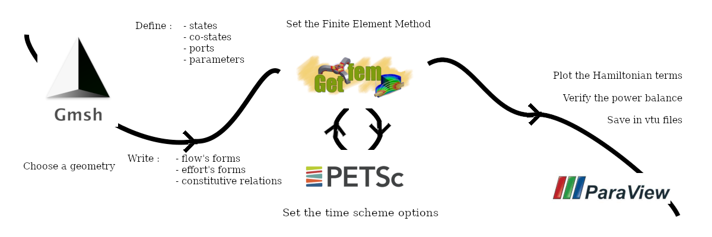

SCRIMP
Simulation and ContRol of Interactions in Multi-Physics
{kind=link}
What is SCRIMP?
SCRIMP (Simulation and ContRol of Interactions in Multi-Physics) is a python collection, namely a package, of methods and classes for the structure-preserving discretization and simulation of multi-physics models, using the formalism of port-Hamiltonian systems (van der Schaft and Maschke (2002)).
SCRIMP aims at speeding the coding process of the Partitioned Finite Element Method on a wide range of (multi-)physical systems (Ferraro *et al.* (2024)), and scrimp and save time!
The documentation is available in pdf.
Port-Hamiltonian systems
What are they?
Let us sketch a rough portrait of port-Hamiltonian systems as they are considered in SCRIMP.
Port-Hamiltonian systems constitute a strongly structured class of control systems with collocated observation. It relies on a functional form \(\mathcal{H}\) (the Hamiltonian), whose variables \(\alpha_i\) are the states of the system. The co-states \(M_i e_i := \delta_{\alpha_i} \mathcal{H}\) are defined as the variational derivative of the Hamiltonian with respect to the states, on the metric induced by the \(M_i\) matrices.
The dynamics is provided via trajectories belonging in a Dirac structure, which can be represented by two matrices (of operators) \(M\) symmetric and \(J\) skew-symmetric as
together with constitutive relations
This structure allows to describe the evolution of the Hamiltonian along the trajectories
The first term of the right-hand side stands for a loss of energy, hence the name of resistive (or dissipative) port for the couple \((f_R,e_R)\). The other two terms stands for exchanges with the environment through the control ports. One is explicit, \(u_{exp}\), as a usual forcing term in the equations (its collocated output \(y_{exp}\) plays no role in the dynamics). The other is implicit: \(u_{imp}\) does not appear directly in the dynamics, and its collocated output \(y_{imp}\) plays the role of the Lagrange multiplier imposing the value of \(u_{imp}\).
Each indexed matrix \(M_\ell\) is the appropriate sub-matrix of \(M\).
A very important and useful fact is that the matrices \(M\) and \(J\) can depend on time and states!
The Partitioned Finite Element Method
The main objective of a structure-preserving discretization in the port-Hamiltonian formalism is to obtain a discrete version of the power balance satisfied by the Hamiltonian functional.
A recent scheme, known as the Partitioned Finite Element Method (PFEM) (Cardoso-Ribeiro *et al.* (2021)), achieves this goal.
The strategy follows three steps, inspired by the Mixed Finite Element Method for steady-state problem with homogeneous boundary condition
write the weak form of the system;
integrate by parts a partition of the state (such that the control appears); and
project on finite element spaces.
Coding philosophy
SCRIMP assumes that the final user is not familiar with numerical simulations. The aim is to facilitate the first step from modelisation to simulation by sticking as much as possible to the port-Hamiltonian framework, getting rid of coding issues.
As such, these simplifications naturally imply a lack of optimization of the code. Nevertheless, the syntax of SCRIMP try to let confirmed users to reach finer tuning in order to perform more sophisticated simulations.
A basic usage of SCRIMP consists in a script with the following steps:
Define a domain
Define at least one state. And of course, its co-state, in order to get a dynamical port
Define a Finite Element Method on this port: give at least an order, at first glance, default values are sufficient
Define algebraic ports (not mandatory) and its FEM
Define control ports (not mandatory) and its FEM
Define parameters
Write down the forms on the flow side of the Dirac structure, i.e. the brick defining the matrix \(M\)
Write down the forms on the effort side of the Dirac structure, i.e. th brick defining the matrix \(J\)
Write down all the forms defining the constitutive relations, always with bricks
Set up time scheme options: again, at first glance, default values are sufficient
Solve
Plot
Export
We try to eliminate as much as possible the computer-side of the simulations, by following the port-Hamiltonian vocabulary, always by keeping the possibility of fine tuning available.
User’s guide
Credits
Development
Please report bug at: ghislain.haine@isae.fr, Giuseppe.Ferrarro@isae-supaero.fr
Current developers: Antoine Bendhimerad-Hohl, Giuseppe Ferraro, Michel Fournié, Ghislain Haine
Past: Andrea Brugnoli, Melvin Chopin, Florian Monteghetti, Anass Serhani, Xavier Vasseur
Please read the LICENSE
Funding
Third-party
The two main libraries used as core for SCRIMP are:
GetFEM – An open-source finite element library
PETSc – The Portable, Extensible Toolkit for Scientific Computation
Meshing is facilitated using (although not mandatory) GMSH – A three-dimensional finite element mesh generator
Post-processing visualization is encouraged via ParaView – Post-processing visualization engine
and finally, SCRIMP also needs for some routines
matplotlib – Visualization with Python
numpy – A well-known package for scientific computing
One of our choice for IDE is Spyder – A scientific Python development environment
How to cite SCRIMP?
Ferraro G, Fournié M, Haine G. Simulation and control of interactions in multi-physics, a Python package for port-Hamiltonian systems. IFAC-PapersOnLine, 2024;58(6):119–24.
@article{Ferraro_2024,
title={{Simulation and control of interactions in multi-physics, a Python package for port-Hamiltonian systems}},
volume={58},
ISSN={2405-8963},
DOI={10.1016/j.ifacol.2024.08.267},
number={6},
journal={IFAC-PapersOnLine},
publisher={Elsevier BV},
author={Ferraro, Giuseppe and Fournié, Michel and Haine, Ghislain},
year={2024},
pages={119--124}
}